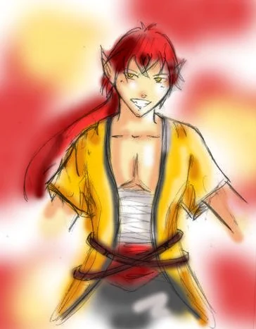

Inaki Wilt
Héros du tome 1
Abandonné peu après sa naissance près de la frontière de Zart, près du village de Kero, Inaki est recueilli par un vieux couple d’humains. Kero se situe à proximité du mur qui sépare le Royaume de Nobat de Zart.
Encouragé par ses parents adoptifs, qui sacrifient toutes leurs économies pour ses études, il est admis dans diverses écoles de la ville de Nobat, puis finit par intégrer la prestigieuse École d’Art et de Magie de Nobat. Ses parents disparaissent tragiquement durant sa première année. Profondément affecté, Inaki décide pourtant, pour honorer leur mémoire, de poursuivre ses études et de devenir mage coûte que coûte.
Tout se déroule bien jusqu’à sa dernière année (3ᵉ année). Lors de la cérémonie du destin, l’Orbe tombe devant lui et se fissure. N’ayant été choisi par aucun mage pour valider ses études, il devient le premier étudiant à redoubler pour raison « inconnue ».
L’année suivante, il rencontre Abmérico Zaro, alors en deuxième année, dont il devient l’ami. À sa seconde cérémonie, l’Orbe sacré ne lui prédit rien : aucun son ne se fait entendre. Il redouble une nouvelle fois, toujours pour raison « inconnue ». Dans sa nouvelle classe, il connaît déjà Zaro et finit par se lier d’amitié avec la plupart des élèves, qui le taquinent souvent à propos de ses échecs.